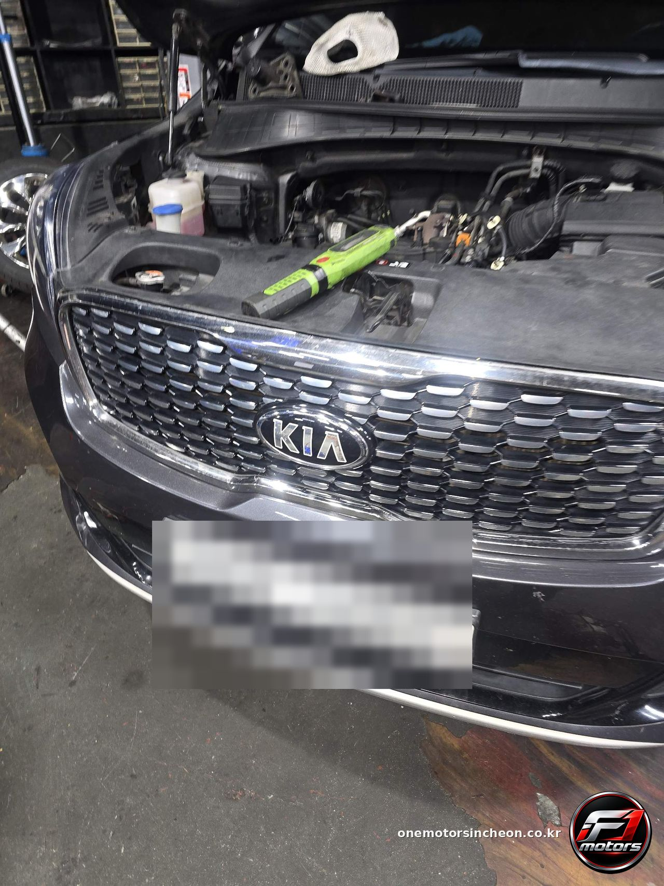
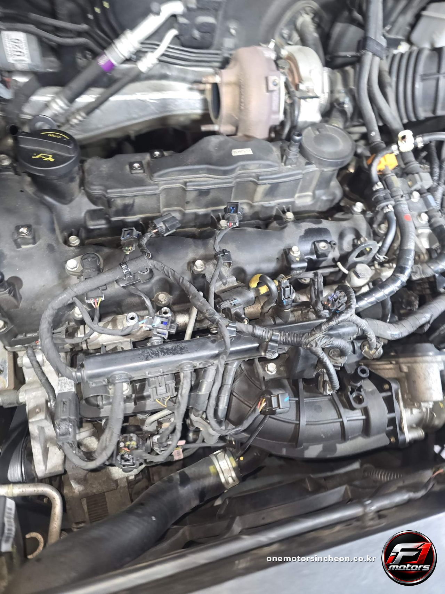
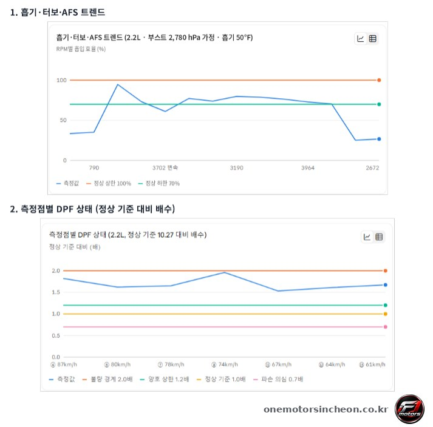
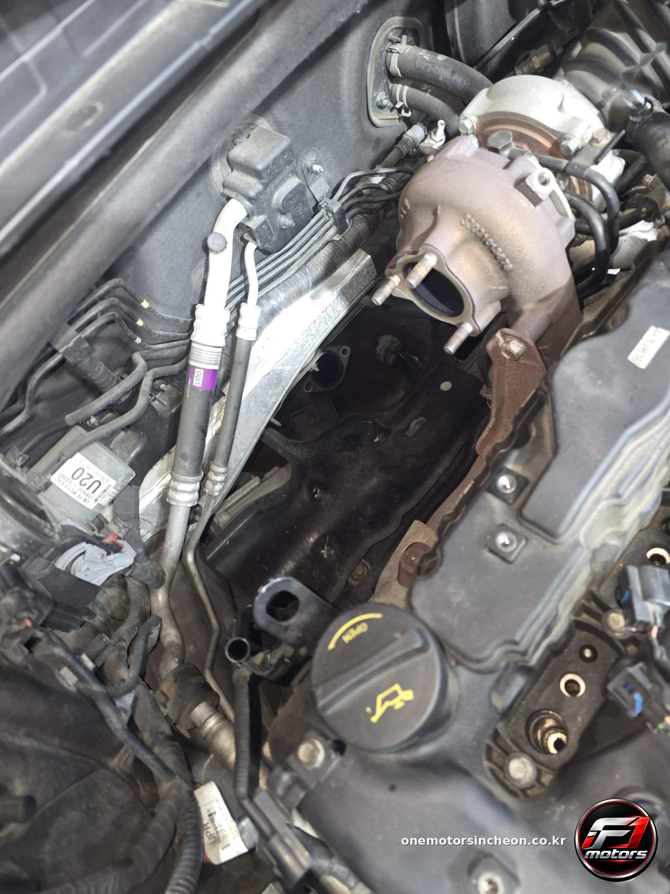
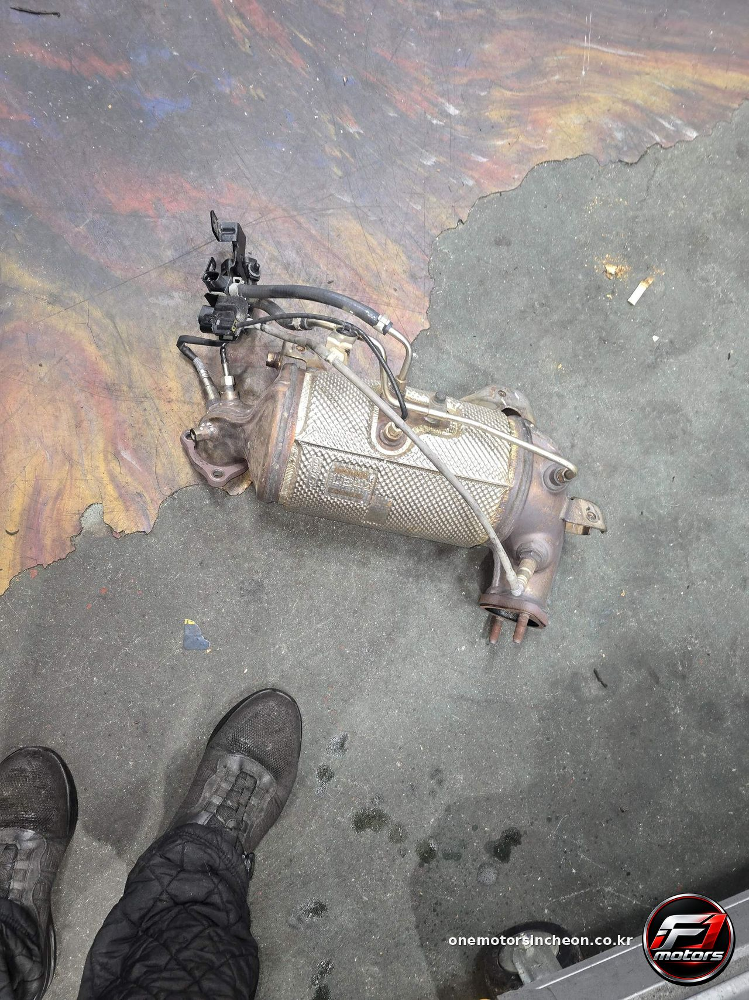
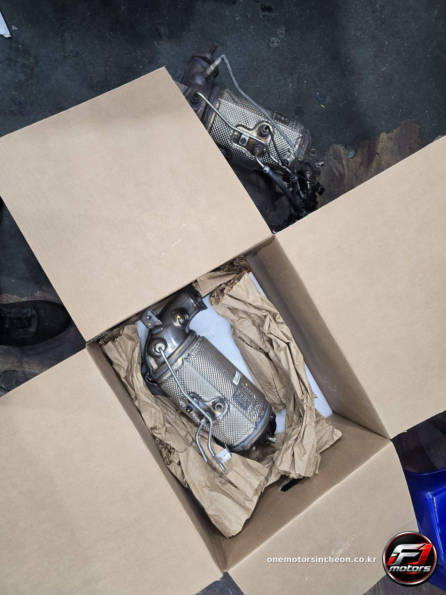
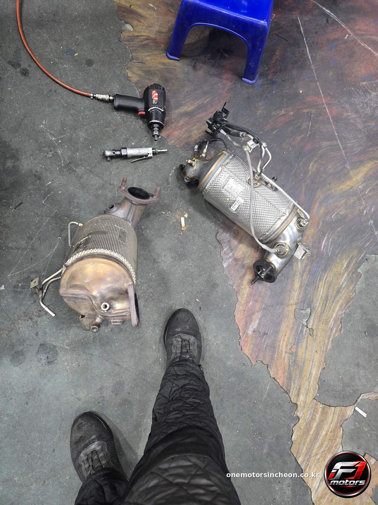
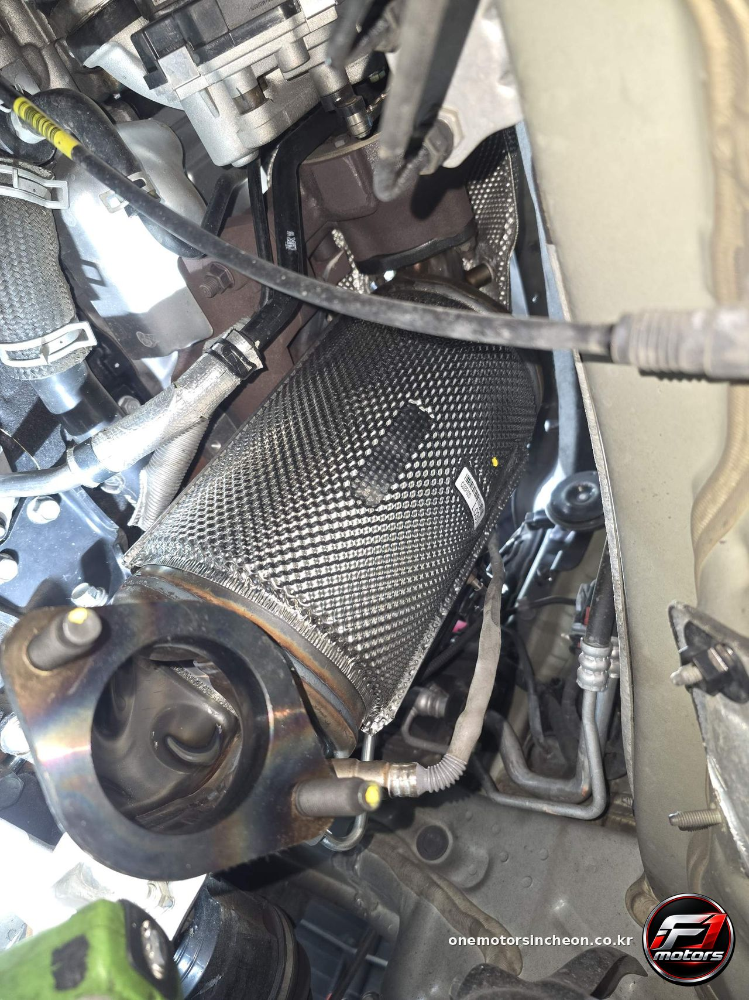
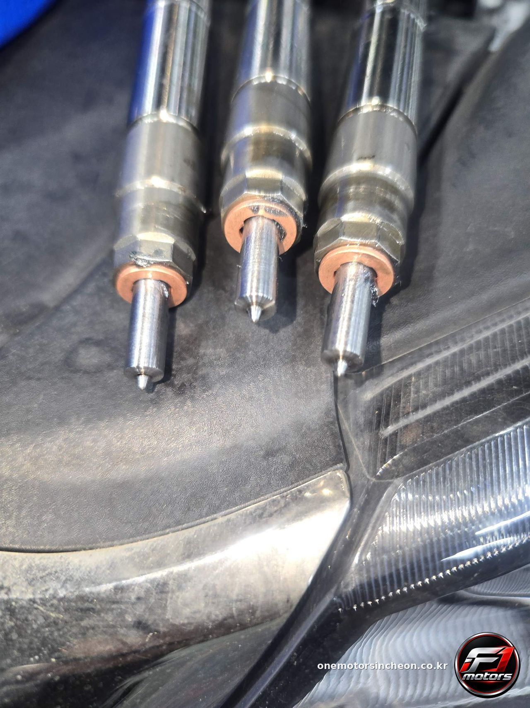
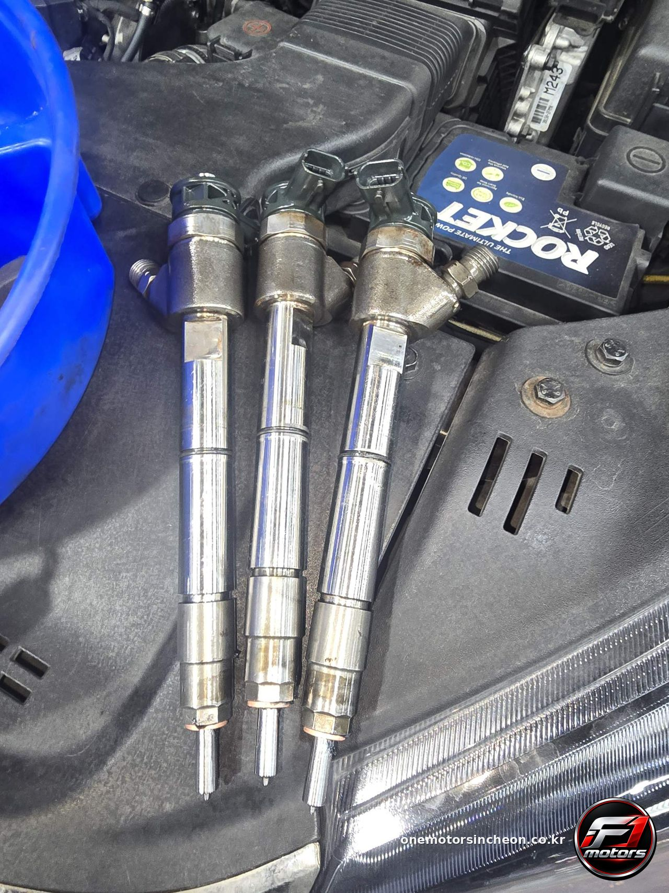

고장사례 및 검색 › 기아 더 뉴 쏘렌토 (UM 2.2 디젤)
기아 더 뉴 쏘렌토 2.2 디젤 16만 km — 흡기라인 수정과 인젝터 4개 자체 리빌드, 신품 DPF 장착
- 차량
- 기아 더 뉴 쏘렌토 (UM 2.2 디젤) · 163,063 km
- 증상
- DPF 관련 고장코드(P2003)가 올라온 상태로 들어왔습니다. 2018년식 더 뉴 쏘렌토 2.2 디젤, 주행거리는 163,063 km였습니다
- 고장코드
- P2003
- 원인
- 디젤에서 매연은 배기 끝에서 생기는 것이 아니라 들어가는 쪽에서 결정됩니다. 공기가 제대로 들어가고 연료가 정량으로 뿌려져야 깨끗하게 타고, 그래야 DPF에 쌓이는 그을음이 줄어듭니다. 그래서 이 차는 DPF를 새것으로 넣기 전에 흡기 쪽과 인젝터부터 손봤습니다.
먼저 흡기 유량과 터보, 공기유량센서 값을 RPM 구간별로 찍어 흐름을 봤습니다. 여기서 한 가지 짚고 갑니다. 이런 데이터는 점 하나로 판정하지 않습니다. 변속이 걸리는 구간에서는 흡입 효율이 순간적으로 내려갑니다. 고장이 아니라 정상적인 현상입니다. 그 구간의 숫자만 떼어내서 「흡기가 새고 있다」고 말하면 틀립니다. 전체 흐름이 어떤 모양으로 가는지, 같은 구간을 여러 번 찍었을 때 같은 모양이 나오는지를 보고 판단합니다. 그렇게 확인한 뒤 흡기라인을 수정했습니다.
인젝터는 네 개를 전부 탈거해 저희 작업장에서 직접 리빌드했습니다. 사진에 노즐 끝과 새 구리 와셔가 보입니다. 커먼레일 인젝터는 네 개가 같은 양을 뿌려야 합니다. 한 개만 많이 뿌려도 그 실린더에서 나온 그을음은 결국 전부 DPF로 갑니다. 네 개의 분사량을 맞춰서 넣었습니다.
DPF는 신품으로 장착했습니다. 사진에서 상자를 연 쪽이 새것입니다.
순서가 중요합니다. DPF부터 갈고 흡기와 연료 쪽을 그대로 두면, 새 DPF도 전과 같은 속도로 다시 막힙니다. 들어가는 쪽을 먼저 맞춰 놓고 마지막에 DPF를 넣어야 새로 들어간 DPF가 제 수명을 씁니다. - 수리내역
- 진단기 전 시스템 스캔 — DPF 관련 고장코드(P2003) 확인 · 흡기 유량 · 터보 · 공기유량센서 데이터 RPM 구간별 측정 · 흡기라인 점검 및 수정 · 인젝터 4개 탈거 · 인젝터 4개 자체 리빌드 — 분사량 세팅 · 인젝터 가스켓(구리 와셔) 신품 교환 · 인젝터 재장착 및 고압 연료라인 체결 · DPF 어셈블리 탈거 · 신품 DPF 어셈블리 장착 · 고장코드 소거 후 재점검
- 교환부품
- DPF 어셈블리 · 인젝터 가스켓(구리 와셔) · 가스켓류
정비 사진 10장










이런 증상으로 찾아오십니다
- 더 뉴 쏘렌토 흡기라인 수정
- 쏘렌토 흡기라인
- 쏘렌토 UM 흡기 점검
- 흡기 유량 측정
- 공기유량센서 데이터
- 터보 데이터 점검
- 더 뉴 쏘렌토 2.2 디젤 매연
- 쏘렌토 매연 많이 나옴
- 쏘렌토 가속이 답답해요
- 디젤 매연이 많이 나와요
- 인젝터 4개 자체 리빌드
- 인젝터 분사량 세팅
- 커먼레일 인젝터 노즐
- 인젝터 구리 와셔
- 인젝터 한 개만 많이 뿌리면
- 신품 DPF 장착
- DPF 신품 교환
- 매연포집필터 신품
- 새로 간 DPF가 또 막혔어요
- DPF 갈기 전에 봐야 할 것
- DPF만 갈면 되나요 흡기도 봐야 하나요
- 인젝터 4개 다 리빌드해야 하나요
- 인젝터 자체 리빌드 가능한가요
- 흡기 데이터가 떨어지는데 고장인가요
- 변속 구간에서 흡입 효율이 떨어져요
- P2003
- 디젤 고장진단 순서
- 인천 흡기라인 점검
- 인천 인젝터 리빌드
- 인천 DPF 신품 장착
- 인천 쏘렌토 정비
- 인천 디젤 고장진단
- 제물포구 커먼레일 인젝터
- 인천 송림동 디젤 정비
- 인천에프원모터스
비슷한 증상이 있으시면 전화로 상담해 주세요. 차종과 연식, 증상만 알려주시면 예상 원인을 안내해 드립니다.
인천에프원모터스는 제조사 공식 서비스센터가 아닌 독립 정비업체입니다. 정비 내용은 차량 상태에 따라 달라질 수 있습니다.